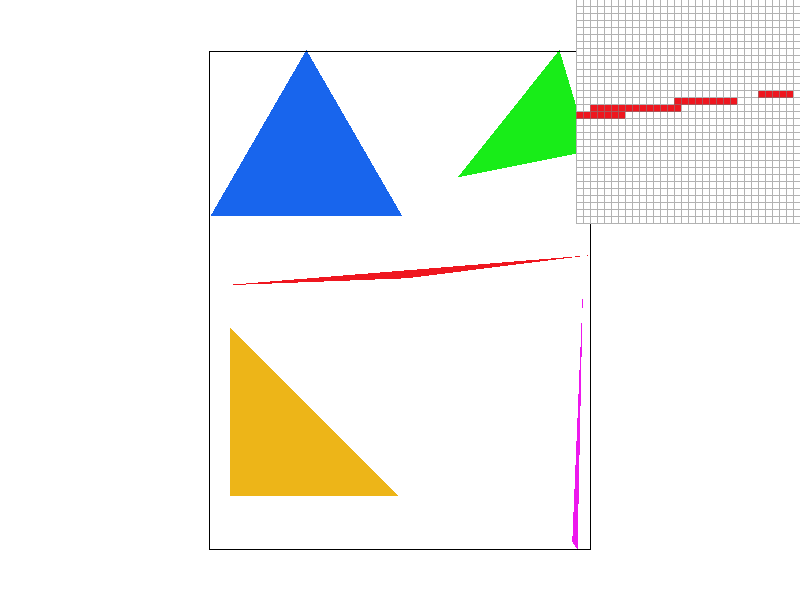
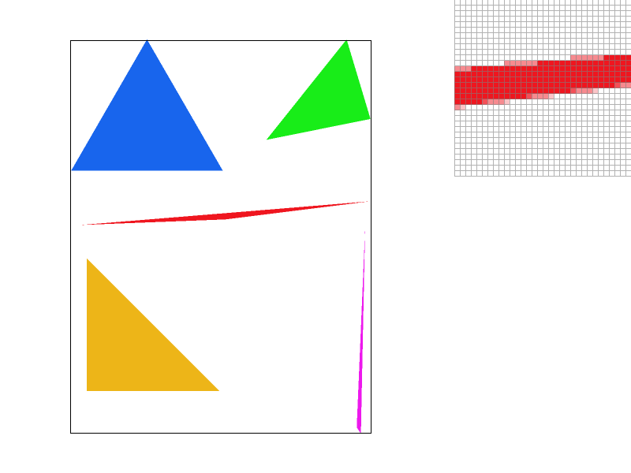
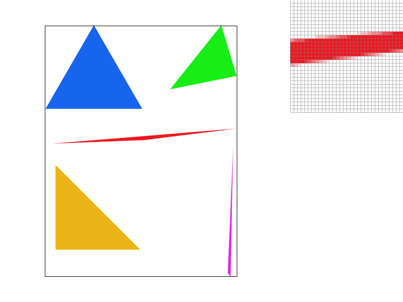
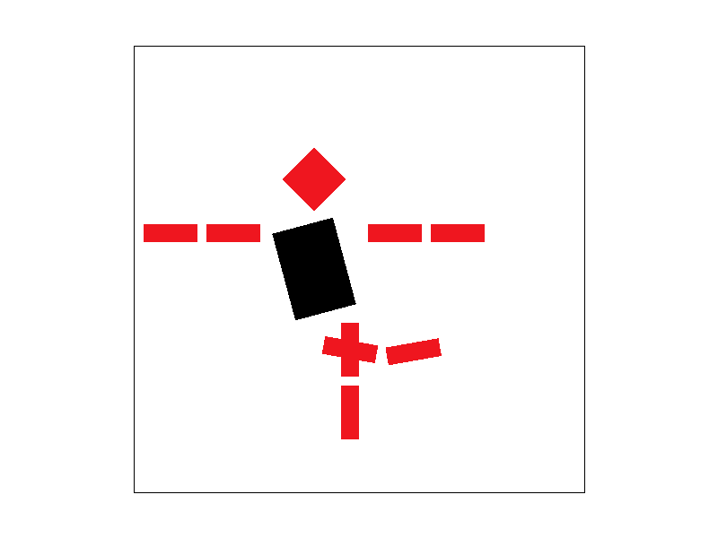
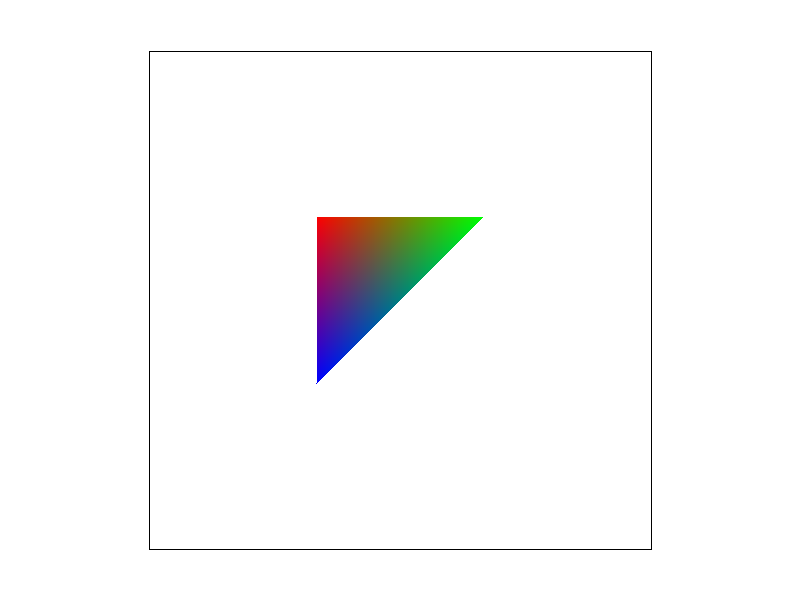
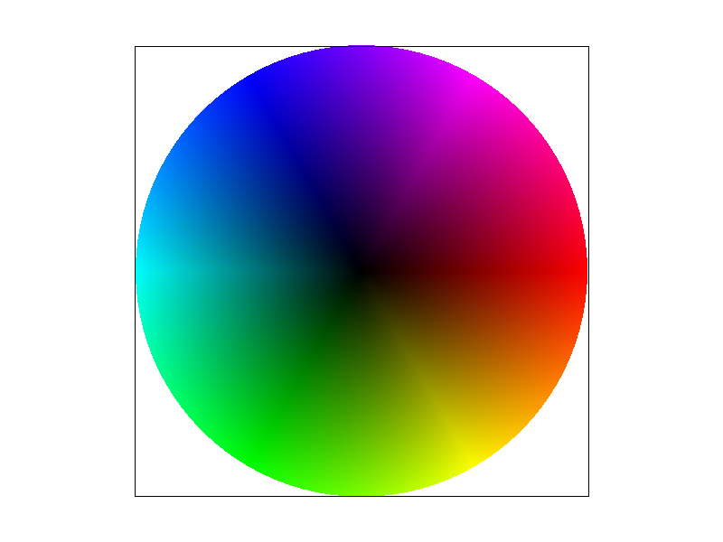
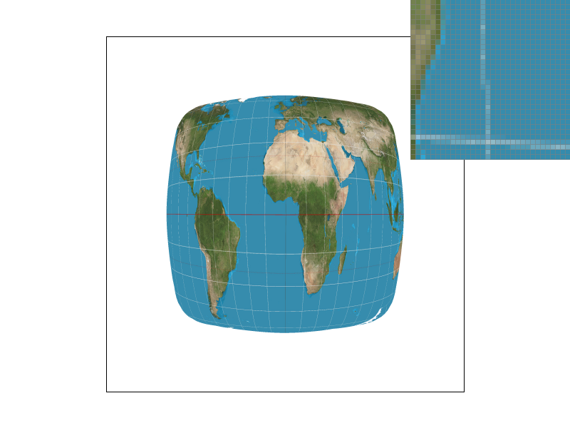
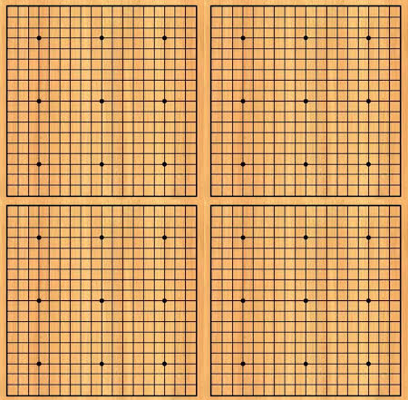
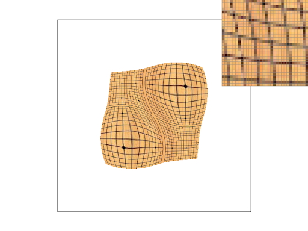
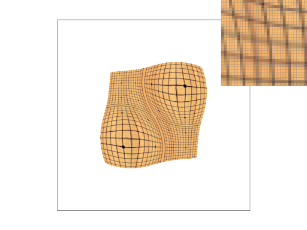

Overview
In this project, I went through some interesting and useful rasterization functions following the rasterization pipeline. I mainly implemented a rasterization system that can perform some rasterization effects, including basic triangle rasterization, supersampling, nearest pixel sampling, Bilinear pixel sampling, nearest level sampling and bilinear level sampling. During the process, I have a better understanding of what aliasing is and what anti-aliasing strategies I can use. I also made some comparisons between different sampling methods and learned some pros and cons of each method, which is definitely useful if I need to trade-off between speed, memory and visual effects in the future.
Section I: Rasterization
Part 1: Rasterizing single-color triangles
1. how I rasterize triangles
STEP 1: Calculate the bounding box of the target area.
Top Left corner of bbox is ((int)min(x0, x1, x2),(int)min(y0, y1, y2);
Bottom right corner of bbox is ((int)max(x0, x1, x2),(int)max(y0, y1, y2).
I calculate the normal vector of each edge of a triangle as follows:
N12 = (q1-q2,p2-p1)
N20 = (q2-q0,p0-p2)
STEP 3: And then for each pixel within the bounding box, I calculate the vector pointing from each vertex of the triangle to the pixel center (xi,yi) and I get:
L1 = (xi-p1,yi-q1)
L2 = (xi-p2,yi-q2)
2. Explain how your algorithm is no worse than one that checks each sample within the bounding box of the triangle.
My naive version algorithm is just the one that checks each sample within the bounding box of the triangle. So, no worse and no better either.Here is the result of basic/test4.svg in Task 1. As we can see in Fig 1, there are obvious jaggies in the zoom-in view of the red triangle. This is because our sampling method is really naive here.
Fig 1. a snapshot of basic/test4.svg
3. Extra Credit
At the beginning, my algorithm will traverse every pixel in the bounding box, checking if a pixel is inside the triangle or not. Then I modified the algorithm to calculating the right most pixel and the left most pixel of a line that are inside the triangle. And then, for each line, pixels between the left most and the right most pixel are all treated as inside the triangle without having to check them anymore. I used clock() to record the time cost of the two algorithms when rendering basic/test3.svg. The naive version algorithm takes 0.024s in average. The modified version takes 0.022s. Althought not a big improvement, its better. Another thought is that, I can calculate the function of the three border of the triangle and initialize my traverse point by calculating the left most and the right most pixel using the functions. But I didn't have time to try that.Part 2: Antialiasing triangles
1. My supersampling algorithm and data structures
In order to perform supersampling, I sample sqrt(sample_rate)*sqrt(sample_rate) pixels for each pixel in the original frame buffer. For each pixel sample, I input it into inside() to figure out if it’s in the triangle and assign color to it. Then I store them into the sample buffer. Finally, I perform a downsample on the sample buffer by using the average of sqrt(sample_rate)*sqrt(sample_rate) pixels in the sample buffer to represent a pixel in the frame buffer.2. Why is supersampling useful?
It renders the image in a higher resolution and, after rasterization, it then downscales the image to the original frame size. During the downscaling process, some high frequency signals are smoothed by averaging over several pixels into one pixel. Thus anti-aliasing works.3. What modifications did you make to the rasterization pipeline in the process? Explain how you used supersampling to antialias your triangles.
For each pixel (x,y), I will need to store sample_rate color elements in sample buffer from (y * width + x) * sample_rate to (y * width + x + 1) * sample_rate. In order to adjust the rasterizer accordingly, I modified the following functions:1) RasterizerImp::set_sample_rate()
Whenever this method is called, it should resize the sample buffer to size width * height*rate.
2) RasterizerImp::set_framebuffer_target()
Whenever this method is called, it should resize the sample buffer to size width * height * sample_rate.
3) RasterizerImp::rasterize_triangle()
For each pixel, I split into sample_rate small blocks first. Then for each block, if the block center is inside the triangle, I will directly assign the color to the corresponding element of this block in the sample buffer.
4) RasterizerImp::fill_pixel()
In order to make border contiguous, I changed the fill_pixel() so that whenever we call fill_pixel(x,y,c), it will automatically assign c to elements of sample buffer from position (y * width + x) * sample_rate to (y * width + x + 1) * sample_rate.
5) RasterizerImp::resolve_to_framebuffer()
As our sample buffer is for super sampling, its resolution is sample_rate times higher than the frame buffer. So I downsample the sample buffer here by assigning the mean color value of all blocks in a pixel of the sample buffer to the corresponding pixel in the frame buffer.
Here are the results of basic/test4.svg at sample rate 1, 4 and 16:
|
|

|
|
|

|
As is shown in the fig2, original sample rate (sample_rate = 1) results in jaggies on the boundary of those triangles. With the increase of sample rate, the jaggies are more and more blurry and the edges are more soft. This is because supersampling can help deal with anti-aliasing by filtering out some high frequency signals.
Part 3: Transforms
After I implemented the translate(), scale() and rotate() functions, I can get the following picture given “robot.svg”.

|

|
Section II: Sampling
Part 4: Barycentric coordinates
In my opinion, Barycentric coordinates in 2D space is a kind of coordinate system that uses the coordinates of three different points on a plane to represent all the points on the plane. We can treat the coordinates of those three different points as the basis of that plane. And we can expand this to spaces with higher dimensions.I also treat it as a simulation of color mixing on a palette ( though light color toning is different from pigment color mixing lol). The color of the three vertices are the three pigments we have before we start to paint. Take fig 4 as an example. We have red, green and blue pigments at the beginning. For each pixel in this triangle, we put in three pigments with different amounts. How much pigment of each color should we add for each pixel is determined by its distance to the corresponding vertex.

Fig 4. a triangle using barycentric sampling

Fig 5. result of basic/test7.svg
Part 5: "Pixel sampling" for texture mapping
1. Explain pixel sampling in your own words
Pixel sampling is to decide the value for a pixel of the frame buffer given the corresponding texture map.2. How did I implemented it to perform texture mapping
I first calculate the barycentric coordinates of a pixel in a texture map. Note that these coordinates are from 0 to 1. In order to correctly index the texel, I multiply the barycentric coordinates by the width and height of the texture map. After I index the corresponding texel position (u,v) in texture space, I need to sample texels according to the pixel methods I choose (P_NEAREST/P_LINEAR).In sample_nearest(), I return the nearest texel of (u,v);
In sample_bilinear(), I return a bilinear interpolation on the four nearest neighbors of (u,v).
3. Results and Discussion
|
|

|
|
|
|
Part 6: "Level sampling" with mipmaps for texture mapping
1. Explain level sampling in your own words
In my opinion, level sampling is sampling texels from different level of mipmap according to how fast a texture signal varies in a pixel area.2. how you implemented it for texture mapping.
First, I calculate the barycentric coordinates in texture space of pixel at (x,y) (x+1,y), and (x,y+1) and store them in a SampleParams struct sp’s sp.p_uv, sp.p_dx_uv, and sp.p_dy_uv.Then I calculate the difference vectors (du/dx,dv/dx)= sp.p_dx_uv - sp.p_uv and (du/dy,dv/dy)=sp.p_dy_uv - sp.p_uv and multiply by the width and height of the resolution at level zero on the x and y values respectively. After I get the difference vectors, I calculate the level D using the following formula.
For nearest level sampling, I just sampling on the level that is nearest to D.
For bilinear level sampling, I do two samplings on the nearest two levels of D, and then perform a bilinear interpolation on the sampled two texels.
3. Comparison between methods
|
|
||||||||||||||||||||||||||||||||||||||||||||||||||||
|
|
||||||||||||||||||||||||||||||||||||||||||||||||||||
4. Showcase the different sampling effects
I love playing Go, so I choose a Go board picture (Fig 7a) to test different sampling effects. I set pixel sampling method as P_LINEAR and sample rate =1. And I got the following results for L_ZERO, L_NEAREST and L_LINEAR in Fig 7. We can see that using L_ZERO with sample rate =1 and nearest pixel sampling leads to terrible aliasing problem (Fig 7(b)). Change level sampling method to L_NEAREST, we can see that the result(Fig 7c) is much better than Fig 7b. The result of L_LINEAR is slightly better than L_NEAREST and is also much better than L_ZERO.|

|

|
|
|

|
Section III: Art Competition
If you are not participating in the optional art competition, don't worry about this section!